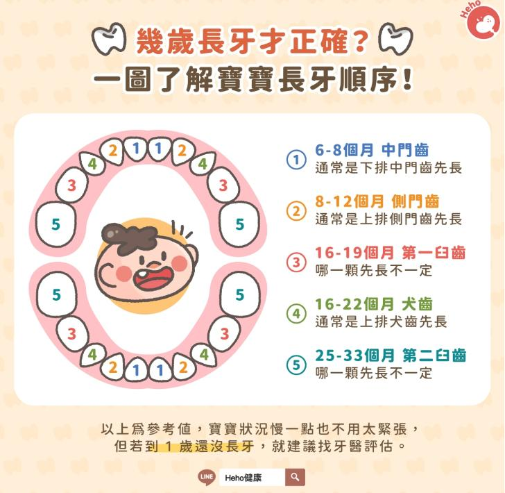
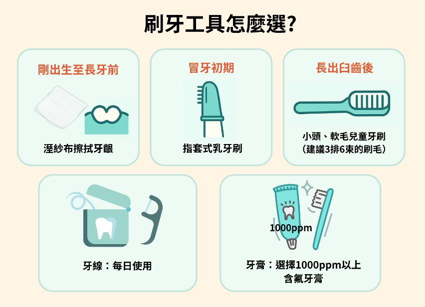
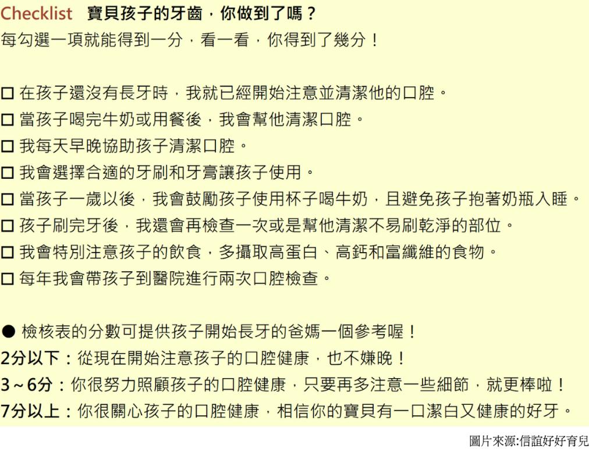
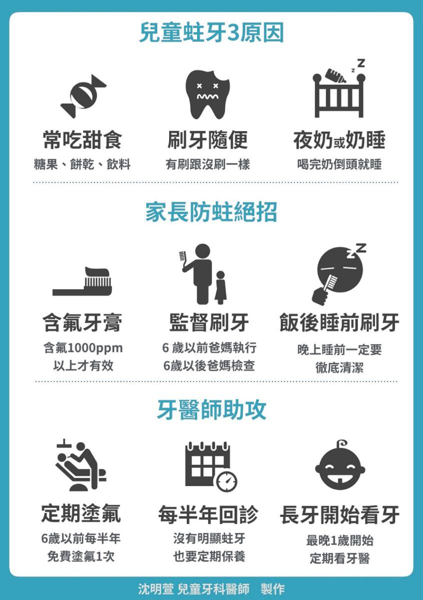

牙齒是孩子攝取營養、發音與建立自信的重要幫手。若從小滿口蛀牙，不只會影響口腔健康，還可能拖累生長發育、睡眠與專注力，甚至打擊自信心。從第一顆乳牙萌出起，爸媽就可以幫助小朋友建立正確的飲食與潔牙習慣，每天早晚刷牙、使用含氟牙膏、控制甜食與含糖飲品，並規律回診檢查與塗氟，把好習慣變成日常，守住孩子從小到大的口腔健康。 |
| 寶寶長牙期：什麼時候開始？怎麼看得出來？ |
1. 時間：第一顆乳牙約在6~8個月萌發；最晚到1歲才長也屬正常；2.5~3歲多數乳牙長齊。
2. 常見表現：口水增加、愛咬東西、牙肉微腫、情緒較煩躁。
3. 就醫時機：若明顯遲於同齡或有疑慮，請諮詢牙醫師評估。 |
|  |
| 長牙期的不適感，可以怎麼做? |
1. 給予適當「器具」
• 在長牙時期，寶寶會喜歡咬硬的東西，為防止寶寶亂咬，家長可準備固齒器；若沒有固齒器，則可將胡蘿蔔、蘋果或稍有硬度的蔬果切成條狀，讓寶寶咬，但須全程看護避免噎到。平時要將硬幣、花生、小玩具等容易吞入的小物收好，防止誤吞而造成意外。
2. 按摩寶寶牙床
• 家長可用紗布包住手指，輕柔按摩寶寶紅腫牙肉，減緩不適。
3. 準備冰凍、柔軟的食物
• 如果寶寶不願意吃東西、沒有胃口，則可為寶寶準備冰凍、柔軟的食物，如優格、布丁等，減緩不適。
4. 適時的給予呵護與關懷
• 長牙初期，多給予陪伴與安撫，幫助寶寶穩定情緒、減輕不適與情緒波動。 |
| 各階段的「刷牙工具」怎麼選？ |
• 剛出生至長牙前：餵食後用溼紗布／手帕巾擦拭牙齦。
• 冒牙初期：改用指套式乳牙刷，清潔牙面與牙齦。
• 長出臼齒後：小頭、軟毛兒童牙刷（建議3排6束的刷毛），3個月更換一次。
• 牙線：每日使用牙線清潔。
• 牙膏：選擇1000ppm以上含氟牙膏；3歲前米粒量，3~6歲豌豆量。刷牙後可不漱口或少量吐掉泡沫即可。 |
|  |
| 培養「正確潔牙習慣」：方法比次數更重要 |
1. 時間：固定早晚刷牙；餐後可視情況補充清潔。
2. 技巧：刷毛與牙面呈45度，原地橫向方式，每次刷兩顆牙，前後來回5~10次，刷乾淨後再換其他兩顆牙。
3. 養成習慣：建立固定的刷牙順序，由上到下、由左到右，才不會漏掉任一顆牙齒。
4. 家長協助：6歲前仍需大人幫忙檢查或複刷。
5. 遊戲化：唱歌計時、鏡前模仿、貼紙獎勵，讓刷牙「做得到、願意做」，變得更有趣。 |
| 保護牙齒，從生活習慣做起，這張檢核表你完成幾項呢？ |
|  |
| 預防蛀牙的日常飲食與作息 |
1. 戒夜奶：1歲後逐步戒除，避免含奶入睡。
2. 餐後清潔：吃完20分鐘內清潔最有效。
3. 點心集中於正餐後，其餘時間以白開水為主、避免含糖飲料。
4. 減少甜食及零食頻率，建議每日少於2次。
5. 養成正確潔牙習慣。
6. 定期塗氟及回診看牙醫。
|
|  |
|
守護口腔健康的關鍵在於每天的小步驟，當護牙成為全家的日常儀式，孩子的笑容、自信與健康，會跟著他們一路長大。
|
資料來源
1. 寶貝牙齒，從小開始
2. 守護特需孩童的牙齒健康：從居家潔牙、看牙挑戰到牙科全身麻醉
3. 幾歲長牙才正確？一張圖了解寶寶0～2歲長牙順序！
4. 兒童口腔保健懶人包
|

 月號－哺乳育嬰站
月號－哺乳育嬰站